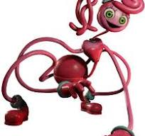

허기워기는 공장에서 만들어진 장난감으로,한때 엄청난 인기를 끌었다.실험체가 되었을땐 최적의 결과라지만
챕터 1에서 공격적인 성향을 보인다.
설정은 허기워기의 아내이다.챕터 2에서 주인공에게 도움을 주고 가는데,이것은 허기가 전기실 열쇠를 주고
공격적으로 변하는것처럼 키시도 그런것인지,
아니면 마미를 대신 죽여달라 하는건지 이유는 불분명하다.
 파피는 챕터 1 끝에서 주인공에 의해 자유로워지고,2에서 그를 돕는다.하지만 2엔딩에서 기차를 플레이케어쪽으로 선로를 바꾸게 되는데,
파피는 챕터 1 끝에서 주인공에 의해 자유로워지고,2에서 그를 돕는다.하지만 2엔딩에서 기차를 플레이케어쪽으로 선로를 바꾸게 되는데,
이는 파피가 그곳의 일을 바로잡고싶은것인지,아니면 주인공의 적이 되는것인지 목적은 불분명하다.

마미는 게임 스테이션에 배치된 장난감이다.아이들에게는 엄마같은 존재지만,직원에겐 적대감을 보인다.
그녀가 죽
을 당시 죽는것보다 그가 자신을 그의 일부로 만드는 것을 더 걱정하는 것으로 보인다.
프로토타입은 기계와 인간의 부위가 합쳐진 형체이며,본 모습은 챕터 3 게임플레이 트레일러 1에서 보이는 것처럼 보인다.
격리실의 감시카메라를 멈추고 탈출 시도를 할정도로 지능이 높다.프로토타입은 적대관계일 확률이 크지만,프로젝트 플레이타임
괴물 튜토리얼에서 인간들의 장난감 배달을 막아야한다는 것으로 볼때 어쩌면 옳은 일을 위해 일한다는 의견도 있다.
캣냅은 플레이케어에서 아이들을 안정시키는 역할을 한다.
라벤더 향이 난다지만 사실 파피 향이 난다고 한다.
돌아가기